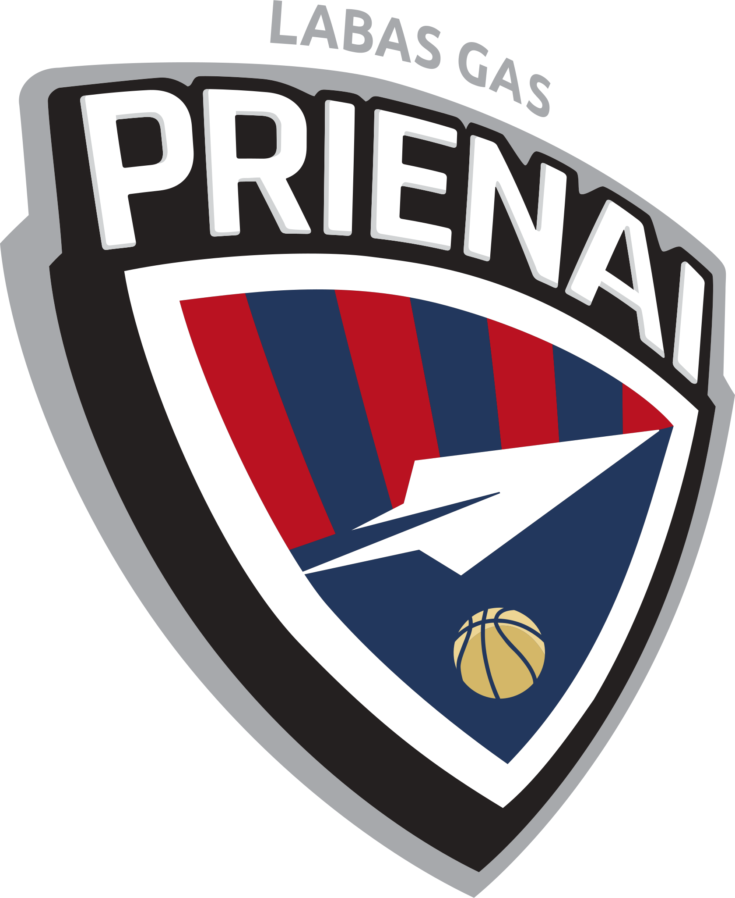

PRIENŲ "Labas Gas"

ĮKŪRIMO METAI: 1994 m.
VYR. TRENERIS: Mantas Šernius
KOMANDOS SUDĖTIS:
- Dominykas Jurgelionis
- Tahj Eaddy
- Vasilije Pušica
- Rapolas Ivanauskas
- Ivan Perasovič
- Jovan Kljajič
- Juwan Durham
- Mintautas Mockus
- Justinas Jogminas
- Erikas Venskus
- Mantvydas Staniulis
- Edas Valenta
- Giedrius Bergaudas
- Rokas Gadiliauskas
- Giedrius Stankevičius
- Ignas Sargiūnas
Klubo svetainė: www.bcprienai.lt
< Grįžti į LKL sudėtis